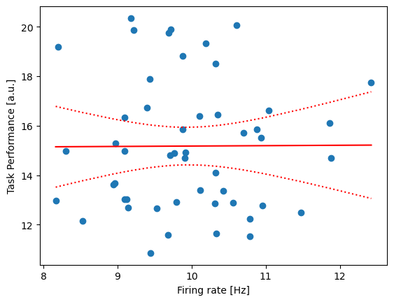
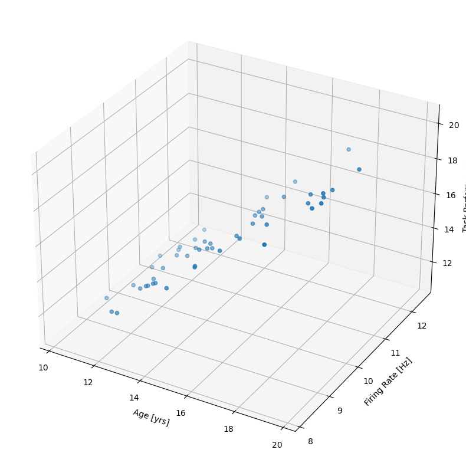

Code
# Load modules
import scipy.io as sio
import numpy as np
import matplotlib.pyplot as plt
from scipy.stats import pearsonr
import statsmodels.api as smIn this notebook, we’ll implement an example application of linear regression applied to behavioral and electrophysiologicial data.
The example behavioral and electrophysiologicial data is regression_example_data.mat. Get these data, and load them:
Compute the correlation between \(x\) and \(y\).
Model the data using regression.
| Dep. Variable: | y | R-squared: | 0.000 |
| Model: | OLS | Adj. R-squared: | -0.021 |
| Method: | Least Squares | F-statistic: | 0.001521 |
| Date: | Mon, 12 Aug 2024 | Prob (F-statistic): | 0.969 |
| Time: | 15:37:13 | Log-Likelihood: | -119.04 |
| No. Observations: | 50 | AIC: | 242.1 |
| Df Residuals: | 48 | BIC: | 245.9 |
| Df Model: | 1 | ||
| Covariance Type: | nonrobust |
| coef | std err | t | P>|t| | [0.025 | 0.975] | |
| Intercept | 15.0190 | 4.037 | 3.720 | 0.001 | 6.901 | 23.137 |
| x | 0.0158 | 0.404 | 0.039 | 0.969 | -0.797 | 0.829 |
| Omnibus: | 4.793 | Durbin-Watson: | 1.865 |
| Prob(Omnibus): | 0.091 | Jarque-Bera (JB): | 3.249 |
| Skew: | 0.459 | Prob(JB): | 0.197 |
| Kurtosis: | 2.153 | Cond. No. | 108. |
Plot the estimated regression model with the data.
# Get model prediction.
pred = res1.get_prediction().summary_frame()
mn = pred['mean']
ci_low = pred['mean_ci_lower']
ci_upp = pred['mean_ci_upper']
# And plot it.
indices_sorted = np.argsort(firing_rate,0)
plt.scatter(firing_rate,task_performance)
plt.plot(firing_rate[indices_sorted[:,0]],mn[indices_sorted[:,0]], 'r')
plt.plot(firing_rate[indices_sorted[:,0]],ci_low[indices_sorted[:,0]], ':r')
plt.plot(firing_rate[indices_sorted[:,0]],ci_upp[indices_sorted[:,0]], ':r')
plt.xlabel('Firing rate [Hz]')
plt.ylabel('Task Performance [a.u.]');
We learn that an additional predictor - age - impacts task performance.
Model all data using regression.
Plot the estimated regression model with two predictors and all data.
# And plot the mean model fit.
fig = plt.figure(figsize=(10, 10))
ax = fig.add_subplot(projection='3d')
ax.set_xlabel('Age [yrs]')
ax.set_ylabel('Firing Rate [Hz]')
ax.set_zlabel('Task Performance');
ax.scatter(age, firing_rate, task_performance);
x = np.arange(8, 12, 0.1) # Firing rate
y = np.arange(10,20, 0.1) # Age
xx, yy = np.meshgrid(x, y) # Model
# zz = res.params[0] + res.params[1]*xx + res.params[2]*yy
# ax.plot_surface(yy,xx,zz);